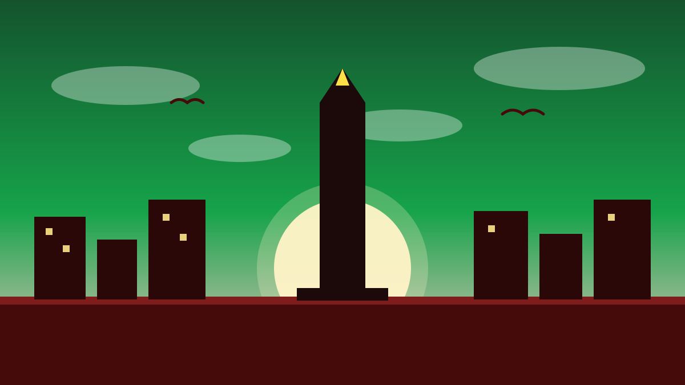

1 / 6

🏛️ NASIONAL
Kenyang ≠ Bergizi
Hari ini Hari Pangan Sedunia, dan FAO punya pesan penting: pola makan yang bikin kenyang belum tentu bikin sehat. Geser →
2 / 6
🌍
Apa Itu Hari Pangan Sedunia?
Diperingati setiap 16 Oktober, bertepatan dengan berdirinya FAO pada 1945. Tema global 2026: “Innovate Today, Nourish Tomorrow” — berinovasi hari ini untuk memupuk hari esok — dengan fokus inovasi, data, dan teknologi, termasuk AI, demi akses pangan bergizi.
3 / 6
📉
Kabar Baik dari Indonesia
Prevalensi kelaparan di Indonesia turun dari 18,4 persen pada 2004–2006 menjadi 6,3 persen pada 2023–2025, menurut laporan State of Food Security and Nutrition in the World (SOFI) 2026. FAO mengapresiasi investasi Indonesia di produktivitas pertanian, irigasi, logistik, dan gizi.
4 / 6
⚠️
Tapi PR-nya Masih Banyak
Indonesia masih berjuang menekan anemia, stunting pada anak, obesitas, diabetes, dan berbagai bentuk malnutrisi. Perwakilan FAO di Indonesia, Rajendra Aryal, mengingatkan: pola makan yang mencegah lapar belum tentu mencegah malnutrisi — tubuh butuh buah, sayur, dan pangan hewani yang cukup.
5 / 6
🌐
Skala Globalnya Ngeri
Dalam pesan Sekjen PBB António Guterres, sekitar 645 juta orang masih menghadapi kelaparan pada tahun sebelumnya, dan hampir 2,7 miliar orang tak mampu memenuhi pola makan sehat. Krisis global ikut mengganggu produksi dan rantai pasok, bikin harga pangan dan pupuk naik.
6 / 6
🤔
Efeknya ke lo apa?
Mulai dari piring sendiri: kurangi makanan yang kebuang, seimbangkan nasi dengan sayur dan protein, dan dukung pangan lokal seperti singkong, jagung, dan sorgum. Pangan itu hak, bukan sekadar kebutuhan — dan perubahan kecil di dapur lo ikut ngaruh.